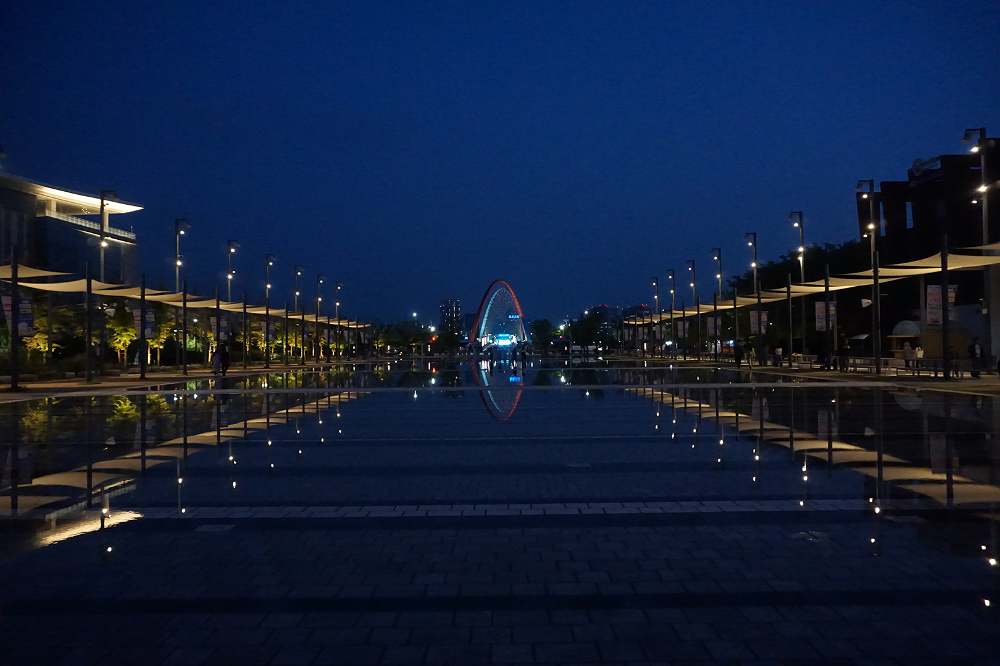

Daejeon: The No-Jam City
There are so many different cities and regions in Korea. And I have a personal goal to visit them all at some point. I have, of course, lived in Seoul. I have also visited Pyeongchang, Chuncheon, Gangleung, Busan, Jeonju, and many more. Among the major cities, I still have yet to visit Daegu, Gwangju, Jeju, and, the topic of this article, Daejeon. Well, recently, I got the chance to visit Daejeon.
You see, I really like baseball. And among my other goals in Korea, I also want to visit every major baseball stadium in Korea. There are only 9. There are only 10 baseball teams in Korea and 2 teams share the same stadium. This year, especially, I have taken a larger interest in watching the KBO (Korea Baseball Organization).
My girlfriend also likes baseball and we were talking about watching a game in-person. She had some time off for holidays, but unfortunately, her favorite team, the Hanhwa Eagles, was not playing in Seoul that week. Jokingly, I suggested we could just go to Daejeon, where their home stadium is located. We both realized it was actually not a bad idea and seriously considered it. She also got excited at the idea of showing me her hometown.
Daejeon is a smallish-medium city, with about 1.5 million residents. Located about 2 hours south of Seoul, it is almost directly in the middle of South Korea, so it is a really easy trip no matter where you are. Especially with Korea’s amazing public transit. It cost us about 10 dollars each for a short 2 hour train ride from Seoul. And there are faster options for slightly more cost, too.
Now, Daejeon actually has quite a poor reputation. Koreans are absolutely brutal towards it. Its nickname is No-jam city, a portmanteau of the English word no and the Korean word jae-mi, which means fun. So its nickname in full is No-fun City.
Even when you ask online from English websites for what to do in Daejeon, the top comments say stuff such as “go to the nearest train station, so that you can to leave” or “go to the bakery, then leave”. I will get more into that bakery comment later, but the gist is the same, “Get out of Daejeon. There is nothing to do here”.
After going there myself, I can understand the sentiment, though I feel like it’s a bit too harsh. As someone from Sacramento, California, Daejeon actually felt very similar to my hometown. Sacramento is quite similar in a lot of ways. They are both heavily overshadowed by other cities. Most foreigners and even many Americans from other states don’t even realize that Sacramento is the CAPITAL of California. They just assume that it must be Los Angeles or San Francisco, since they are so famous and well-known. They both possess only one major sports team. Sacramento has the Kings in the NBA, while Daejeon has the Hanhwa Eagles in the KBO. And one of my favorite parts about both of them…they both feature a heavy amount of greenery.
This leads to them both having a very peaceful vibe. Yes, they don’t have a lot of MAJOR events or activities to go to. But they are quite nice places to exist and spend days in.
Sungsimdang
Now about that bakery I mentioned earlier. The place that Koreans say is the only place of value in Daejeon. Its name is Sungsimdang, pronounced sung-shim-dang (dahh-ng). This is a hugely popular bakery that is even well known nationally.
It enjoys large popularity and is one of the biggest bakeries in the country. When Koreans travel to Daejeon, they make it a point to specifically go to Sungsimdang. There are multiple branches, all located in Daejeon, including one in Daejeon station, so you can grab some bread on your way out of town. It has truly become one of the attractions in Daejeon, so I like how even though they have expanded to having multiple branches, they are still centered on and focused around Daejeon.
Normally, I trash Korean bread and bakeries when talking to people about the quality of the bread. Korean bakeries largely mess up so many breads in horrible ways. From improperly cooked bread leading to horrible texture (SOOO much of the bread here is overcooked or undercooked). To just sweetening normal breads and completely ruining them in irredeemable ways.
Bread is one of the few things that I truly miss when I am in Korea. I love bread and finding decent quality bread is hard here. But I have to say that Sungsimdang deserves its reputation. It is Camden-approved. At Sungsimdang, they are most famous for their fried-soboro bread and strawberry cake.
On our visit, I felt like I had to get their signature item, so I went with the fried-soboro bread. The fried-soboro bread is a sweet bun with a crispy top. We also took the opportunity to get some other bread and pastries to eat later.
Hanhwa Eagles

The second main attraction in Daejeon is the Hanhwa Eagles, a member of the KBO. Among the major sports leagues in Korea, I would say that baseball has BY FAR the most popularity. The only thing that compares is the national soccer team, though that is sort of in its own category. Not being a domestic league, regularly playing games, and fighting for a sense of national pride and all that, it sorta doesn’t fit.
The baseball games in Korea are absolutely hype and quite an adventure just on their own. So unlike games in the US. Korea sport and fan culture here is absolutely crazy and exciting to get involved with. To the point that I plan to write an article JUST about the fan culture here.
To give you a short preview, in baseball, the fans are constantly cheering and chanting songs, unlike the US where we cheer only when something good happens. It’s NONSTOP. Such a fun experience.
The Hanhwa Eagles have quite the dedicated fanbase, too. I was kind of surprised, to be honest. Hanhwa has struggled and been a bottom of the league team since 2008. Except for a lone playoff appearance in 2018, they have failed to reach the playoffs since 2007. If a team in the US spent this much time, they would begin to lose their fanbase and have low attendance (looking at you A’s and ESPECIALLY YOU, Jeff Fisher…). But Hanhwa’s fans have remained invested.
This year, Hanhwa has seemingly turned it around and are currently, as of the time of writing, sitting in 1st place. So the fans have really come out in force to support their team. We actually weren’t even able to secure tickets in the online sales period. So on game day, we travelled to the stadium early and waited in line for tickets that would be sold at the gate.
We were able to get 2 tickets in right field, in the first row. If you want to get tickets to a Hanhwa game, you are either going to need to be quick during the online ticket sales 1 week prior to the game, or show up early to the stadium and wait around in line for a couple hours.
In fact, we also went to another Hanhwa game about a week later in Seoul and the Hanhwa fans STILL showed out in strong force, even though Daejeon is a couple hours train ride away. I really underestimated their fanbase and I really respect the fans for standing by their team for so long, even though they struggled.
To add to the excitement surrounding the team, this year actually marked the opening of their new stadium, Daejeon Hanhwa Life Ballpark. It is a beautiful modern ballpark that was quite fun to walk around and explore. If you are a baseball lover, I highly recommend going to games in Korea, and Hanhwa is no different.
National Science Museum
Next up is the National Science Museum. When talking about Daejeon, I’m so surprised this is not mentioned more often!
If you know me, you will know that I LOVE science and nature, so this was an awesome place to go to. It was actually interesting to me that the National Science Museum was located in Daejeon. Often, the national organizations and museums are located in Seoul or close to Seoul. But being located in a smaller city, such as Daejeon, actually provided it with a huge advantage.
It allowed them to create a museum on a huge campus with many buildings. Each building on the campus is home to a different area of science. There is a Science and Technology Hall, a Natural History Hall, a Planetarium, a Botanical Garden, an Astronomical Observatory, and much more.
It is huge and there is so much to see. We definitely weren’t able to see it all. This museum is even enjoyable to both children and adults alike as there is even a children’s section of the museum.
With such a huge campus, they really took advantage of the surrounding environment, too. With so many plants and a small stream nearby, it is very peaceful to walk around outside, too. I highly recommend going here, especially if you have interest in science and nature.
Hanbat Arboretum
If we are going to talk about nature, then I suppose that Hanbat Arboretum should be up next. Hanbat Arboretum is a huge park just south of the river. With thousands of plant species, a pond, and much more, this is a park that nature lovers can really enjoy.
The park is also really interesting in the layout. There is a path down the middle leading to a square and bridge across the river. And then there is a section of the garden on both sides.
Both sides are then laid out thematically with a different theme on both sides, with one side being dedicated to local plants and the other being dedicated to more exotic and non-native plants. Even within each section though, there are multiple smaller sections, such as a rock garden, a pond, and different sections dedicated to different types of forests.
On the day we went, the weather was beautiful, so we were able to walk around for a couple hours. There is so much to see and so many different snaking paths. We definitely could have spent even MORE time there if we wanted. There are also plenty of places to sit around and relax at too, and we stopped at one of the rest areas to sit and eat some of the bread we had bought at Sungsimdang earlier that day.
I really enjoyed it there and wish I could have spent even more time there, but we were low on time and had to catch our train back to Seoul.
I didn’t know this at the time, but apparently Hanbat Arboretum was built in the early 2000s. After Taejon Expo ’93 (Taejon is Daejeon’s old spelling), the city contemplated what to do with the parking lots afterwards. They eventually settled on creating this park in the space.
I really like when cities build large green spaces into the middle of cities. It makes them so much nicer to be in. A mix of urban and nature is underrated to making cities nice to live in and is why I was actually impressed by Daejeon and think it doesn’t deserve its reputation.
Expo Park

On that note, I think we should move just across the river to Expo Park. Just walk from Hanbat Arboretum across Expo Bridge, a cool bridge that looks spectacular at night with its design and lights.
Built for the international expo in 1993, it commemorated the 100th year of Korea’s introduction to the world expositions at the 1893 Columbian Expo of Chicago. It showcased Korea’s technology and achievements at the time. Many buildings and pavilions were built for various showcases and exhibitions.
Today, only 3 main buildings remain from then, including the highlight, Hanbit-tap, a tower located at the center. Today, there is a big square with fountains that spray at different times. Sometimes there are even fountain and water shows.
The square is also host to various events at different times. For example, when we went, there was a small beer festival, with various food trucks and tables to sit and eat at. They were even advertising for another event that was going to occur there in a couple weeks. So be sure to research if there are any events occurring there at the time you are going. It seems like events are hosted there pretty regularly.
A City of Nature
The final thing I will briefly touch on is the rivers, streams, and paths here. It seems like I always end up talking about these wherever I go. It may seem like I’m obsessed with them. And that’s because I AM.
In Daejeon, they are just like I described in my paths article. Beautiful paths lining the river on both sides. Perfect for walking, running, or biking along. Even better than Seoul though, they are even greener and more nature-y.
Being a smaller city, they were able to dedicate more of the land around the river to parks and green areas. There are so many plants, trees, and more here. When walking along the river, I imagined this as the kind of place I would regularly go to if I lived here.
These are the kinds of things I think about and judge places on when I travel to them and really the heart of why I wanted to start this blog. The main question I think of wherever I travel is: “What would it be like if I lived/spent an extended amount of time here?” It’s part of why I chose to do my entire degree program abroad as opposed to just doing a semester abroad. Really integrating and spending time somewhere is totally different. It really allows you to explore and experience the little things of life in the places you go.
Conclusion
Daejeon is actually quite a wonderful city that does not deserve the reputation it has. People call it No-jam city, but I would describe it as peaceful and homely. I think it is definitely worthy of spending some time in, especially if you are going to be spending an extended amount of time in Korea.
They even have a cute mascot, which was originally created for the expo, Kumdori, an alien-esque mascot. And a slogan of “Daejeon is U”, a slogan based on both English and the local dialect. Every region of Korea has its own dialect, known as satoori in Korean, so let’s sign off with the slogan in the local dialect: Daejeon-e-yoo!